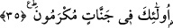

sıfatları sayılırken en son “namazlarına devam ettikleri” (el-Mü’minun, 23/9) ifâde
buyurulurken bu sûrede buna ek olarak, “onlar şâhidliklerini doğru yapanlardır”
ifâdesi getirilmiştir. Çünkü bu ifâde, “onlar emânetlerine ve ahidlerine riâyet
edenlerdir” ifâdesinden sonra gelmektedir. Şâhidliğin yapılması ise -dâvâcı taraf
hakkını elde edebilmek için buna ihtiyaç duyduğunda- yerine getirilmesi gereken bir
emânettir. Şâhidlik Mü’minun sûresinde de zikredildi, bu sûrede ise ayrı bir hususiyet
olarak biraz daha fazla açıklandı. Bu sûrenin bir hususiyeti de “salat” kelimesinin
tekrar edilmesidir. Önce “ille’l-musallîn ellezîne hum alâ salâtihim dâimûn”
denilerek 23. âyette ifâdesini bulmuş, daha sonra ise bu âyet-i kerîmede “vellezîne hüm
alâ salâtihim yuhâfizûn” buyrulmuştur.”
Kâşânî der ki: Onlar kalb namazlarını ki o da murâkabedir, muhâfaza edenlerdir.
Veya onlar nefis namazını muhâfaza edenlerdir ki bu mânâ da âyetin zâhirinden
anlaşılmaktadır.
Fethu’r-Rahman isimli eserde şöyle deniyor: Kırâat imamları “salat” kelimesinin
burada ve En’am sûresinde tekil olduğunda ittifak etmişlerdir. Mü’minûn sûresinde
daha evvel geçen kırâat ise bunun aksine çoğuldur. Çünkü bu Meâric ve En’am
sûrelerinde, Mü’minun sûresinde bahsedilen şeylerin hepsi bulunmamaktadır.
Mü’minun sûresinde önce müminlerin pek mühim vasıfları zikredilmiş, sonra da onların
büyük mükâfâtları zikredilmiştir. Böylece namaz kelimesinin orada çoğul olması daha
uygun düşmüştür. Bu sebeple kırâat imamlarının ekserisi orayı çoğul okumuşlardır.
Bunun dışındaki yerlerde bu durum söz konusu olmadığı için oralarda kelimenin tekil
gelmesi daha münâsip olmuştur.
35. İşte bunlar, cennetlerde ağırlanırlar.
“İşte bunlar”, yâni yukarıda zikredilen üstün sıfatlarla bezenmiş olanlar
“cennetlerde” ebedî sevap ve sermedî mükâfat ile “ağırlanırlar.” Bu cennetlerin
kıymetini takdir edebilmek ve nasıl olduğunu hakkıyla idrak edebilmek mümkün
değildir. Yâni gelecekte böyle olacaklardır. Fakat âyet-i kerîme bu ikrâmı sanki şu anda
oluyormuş gibi anlatmaktadır.
Bu son cümle -dilbilgisi kuralları açısından- ikinci haberdir veya “mükramûn”
haberdir, “fî cennâtin” o kelimeye bağlıdır. “Fî cennâtin”, âyet sonlarındaki fâsılalara
riâyet için “mükramûn” kelimesinden önce getirilmiştir. Ya da “fî cennâtin” muzmer
bir kelimeye bağlıdır. O da haberdeki zamirden hâldir. Yâni “Onlar cennetlerde
oldukları hâlde ikrâm olunurlar,” demektir.